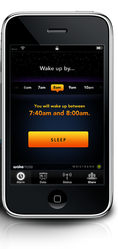

I’m seriously considering this product. It analyzes your sleeping habits so that it can wake you at the perfect moment ensuring you feel great. Not sure if I believe it, but it sounds really cool. I need this.